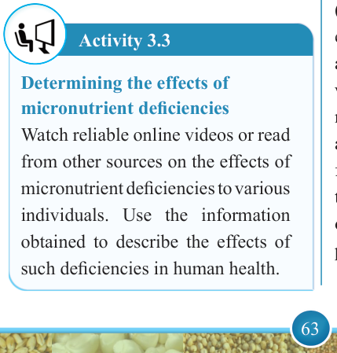
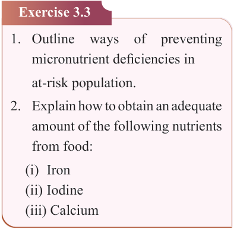
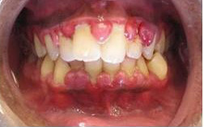

63


Food and Human Nutrition

Form Two

the body such as to support proper immune function and maintain healthy skin, cartilage and bones. A prolonged deficiency of vitamin C may lead to bleeding and swollen gums, loose teeth, general weakness, irritability, muscle and joint pains, weight loss and fatigue.
Scurvy can be prevented by providing the body with foods rich in vitamin C including citrus fruits such as oranges, lemons and tangerines. Other foods include pineapples, plums, guavas, grapes, papayas, baobab and green leafy vegetables. Figure 3.8 shows gums affected with scurvy.

Figure 3.8: Gums affected with scurvy
Source: https://healthjade.net/scurvy/
Activity 3.3
Determining the effects of micronutrient deficiencies
Watch reliable online videos or read from other sources on the effects of micronutrient deficiencies to various individuals. Use the information obtained to describe the effects of such deficiencies in human health.
Exercise 3.3
1. Outline
ways
of
preventing
micronutrient deficiencies in at-risk population.
2. Explain how to obtain an adequate amount of the following nutrients from food:
(i) Iron
(ii) Iodine
(iii) Calcium
Overweight and obesity
Overweight and obesity are caused by excessive intake calories, fats and sugar, which leads to the accumulation of body fat that impairs health. The excessive intake, usually coupled with physical inactivity and a sedentary lifestyle, leads to excessive weight gain, resulting in overweight and obesity. A combination of obesity and physical inactivity leads to higher risks of Diet- Related Non-Communicable Diseases
(DR-NCDs) such as type 2 diabetes, elevated blood lipid levels, hypertension and cardiovascular diseases. An adult who is overweight or obese should eat more foods rich in fibre such as fruits and vegetables and less fat and sugary foods. Should also do physical activities to burn calories to ensure energy balance or reduce weight. Figure 3.9 shows a person with obesity.
17/09/2025 16:30